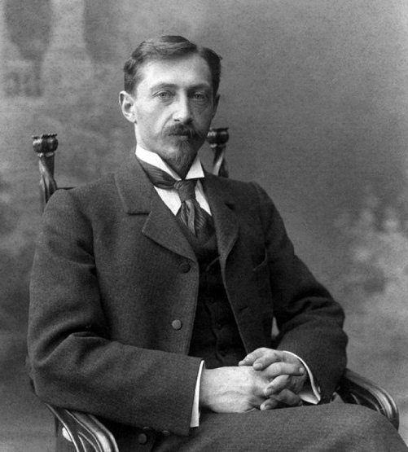
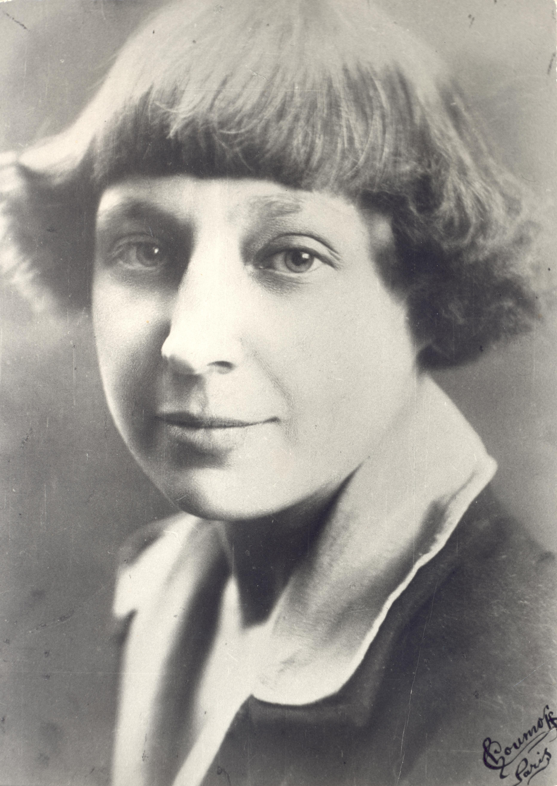

Нина Николаевна Берберова (1901–1993)

Ранние годы
Нина Берберова родилась 26 июля 1901 года в Санкт-Петербурге в армянско-русской семье. Её отец работал в министерстве финансов. С раннего возраста проявляла интерес к литературе и начала писать стихи.
Эмиграция
В 1922 году вместе с Владиславом Ходасевичем покинула Советскую Россию. Жила в Берлине, затем в Париже. В эмиграции активно участвовала в литературной жизни русского зарубежья.
Творческий путь
Первые произведения были опубликованы в эмигрантских изданиях. Автор романов "Последние и первые" (1930), "Повелительница" (1932), биографических произведений о Чайковском и Бородине.
Поздние годы
С 1950 года жила в США, преподавала русскую литературу в Йельском университете. В 1969 году опубликовала автобиографию "Курсив мой", получившую широкое признание.
Иван Алексеевич Бунин (1870–1953)
Ранние годы
Иван Бунин родился 22 октября 1870 года в селе Вурнары нынешней Чувашской Республики. Происходил из старинного дворянского рода. Увлекался литературой с детства.
Эмиграция
В 1920 году покинул Россию и поселился в Париже. Стал одним из лидеров русской эмигрантской литературы.
Творческий путь
Автор множества рассказов, повестей и романов. В 1933 году стал первым русским писателем, удостоенным Нобелевской премии по литературе.
Поздние годы
Продолжал писать до самой смерти. Его произведения остаются классикой мировой литературы.
Марина Ивановна Цветаева (1892–1941)
Ранние годы
Марина Цветаева родилась 26 сентября 1892 года в Москве. С детства увлекалась литературой и музыкой. Первый сборник стихов опубликовала в 1910 году.
Эмиграция
В 1922 году покинула Россию и жила в Чехословакии, Германии и Франции. В эмиграции продолжала писать стихи и прозу.
Возвращение в Россию
В 1939 году вернулась в Советский Союз, но не смогла адаптироваться к новой жизни. Трагически покончила жизнь самоубийством в 1941 году.